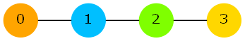
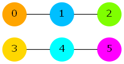
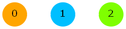

Single Round Match 648 Round 1 - Division II, Level Two
Lun the dog has found an undirected graph in Shuseki Forest. The graph consisted of N vertices and some edges. The vertices of the graph were numbered 0 through N-1. Each edge connected a different pair of vertices.
You are given the description of the graph in a String[] graph with N elements, each containing N characters. For each i and j, graph[i][j] will be 'Y' if vertex i and vertex j are connected by an edge, and 'N' otherwise. (Note that for each i, graph[i][i] will be 'N': there are no self-loops.)
Lun is interested in articulation pairs in this graph. An articulation pair is an unordered pair of two different vertices whose deletion increases the number of connected components in the graph. (The deletion of a vertex also removes all edges incident with that vertex.)
Return the number of the articulation pairs in Lun's graph.
Fragile2countPairsString[]intint countPairs(String[] graph)The graph looks as follows:

The articulation pairs are (0, 2), (1, 2) and (1, 3).
For example, here is why (0, 2) is an articulation pair: Currently there is one connected component. (It contains all four vertices.) If we remove the vertices 0 and 2, and all edges incident to these vertices, we will be left with two isolated vertices: 1 and 3. Each of these vertices now forms a different connected component, so the number of connected components increased from 1 to 2.

The articulation pairs are (0, 4), (1, 3), (1, 4), (1, 5) and (2, 4).

There are no articulation pairs.
"NNNYNNNNYN", "YYNNNNNNNN", "YYNNNNNNYN", "NNYNYYNYNY", "NNNNNNNNYN"]
"NNNNNNNNNNNNNNNNYNNY", "YNNNNNNNNNNNNYYYNYNN", "NNNNYNNNNNNNNYYNNNNN", "NYNNNNNNNYNNNNNNNNNN", "NNNNNNNNYNNNYNNNNNYN",
"NNNYNNNNNNNNNNYNNNNN", "NNNNNNNNNNNNNNNNNNNN", "NNNNNNNNNYNNNNNNNYNN", "NNNNYNYYNNNNNNNNNNNN", "YNNNNNYYNNYNNNNNNNNN",
"YNNNNNYNNNNNNNNNYNNN", "NNNNNYNNNNNNNNNYNYNN", "NNNNNNYNNNNNYNNNYNNN", "NNNNYNNNNYNNNNNNNNNN", "YNNNNYNNNNNNNNNNNNNN"]